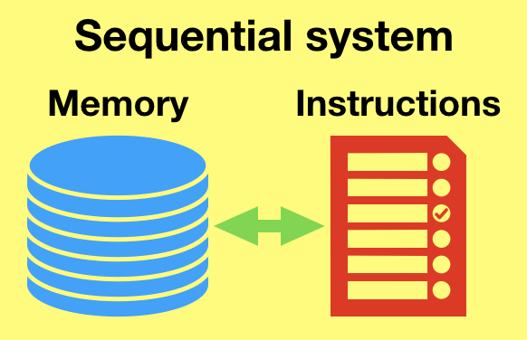
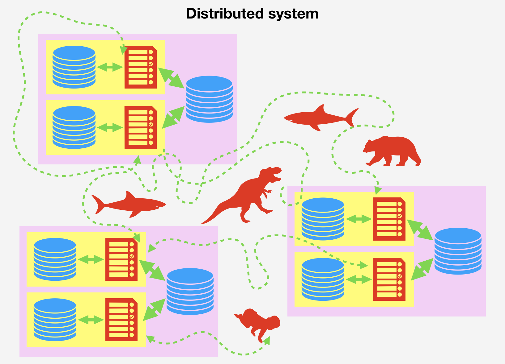

Contradictions
Frontends outnumber the backend
So far, we've studied the conversations between a frontend and a backend, that is, a computer running a frontend program and a computer running a backend program, including the derived conversations between this backend and other backend servers (databases, mailers, etc.).
But, of course, we know that's usually not all participants in our little distributed system. It actually looks like this:
Unless we have a single user, we have many frontend computers talking with our backend at the same time.
Side note: beware of your development setup bias
Actually, there's a scenario in which you'll usually have a single frontend talking to your backend at any given time: when developing. You'll typically open your browser, go to localhost:something, and see if whatever you're building works.
This is a huge source of bias. You should be aware at all times that your local system reflects only very poorly your real production system. Some ways in which your local environment is different:
- You will rarely experience contradictions.
- The local network is very fast and reliable. (In particular, if you're targeting mobile users, I'd say you must use a network limiter.)
- It runs in a laptop instead of a server, or a series of servers. Hardware is different.
- It probably isn't as virtualized as the server.
- The server sustains way more load.
- The server is probably running other programs that may steal resources from your backend.
Frontends share memory
If every communication between a frontend and a backend were completely isolated from the others, then this wouldn't be a problem at all. But, usually, there is some shared memory in place: a database, a cache.
This opens up the possibility of contradictions. A participant may assume that the shared memory has something in it, but in reality it has something else.
Sequential, concurrent, distributed
Actually, this chapter isn't really about distributed systems. As we've seen, distributed systems are all about communication through an unreliable network. But, even if communication happened through a completely reliable network with guaranteed bounded delay, we would still have several participants sharing memory, and thus the possibility of contradictions.
Everything in this chapter actually applies to concurrent systems, of which distributed systems are a subset.
Sequential system

A sequential system, or just process, is the basic building block of computing: some instructions run one after another, reading and storing bits in a piece of memory that nobody else uses, in a completely reliable way. A read or a write to that memory effectively stops the world.
Concurrent system
If we take several processes running at the same time and give them access to the same piece of memory, we get a concurrent system. This piece of memory is also accessed in a completely reliable way.

Note that, by leaving each other "messages" in the shared memory, concurrent processes may communicate. In fact, this capacity of reliable communication between processes is the really fundamental thing about concurrent systems. In practice, concurrent processes communicate through shared memory, but on some programming models this shared memory is abstracted away.
Distributed system
When we make several processes running at the same time communicate through an unreliable medium, we get a distributed system.

Distributed systems are inherently concurrent, since we find in them sequential processes communicating with each other. But we may find concurrent systems that are not distributed.
Related events
When processes run, they produce events, things that happen: this piece of memory gets read, this gets written, this page gets printed, etc. Computing is nothing but a succession of such events.
When considering a sequential process, all events have an intrinsic, implicit relationship between them: each event either happens before or after another event.
Events can have an additional relationship: one event may depend on another. If event A wouldn't have happened if event B wouldn't have happened before A, we say that B causes A, or that A depends on B. We call this a causal relationship.
If two events aren't causally related, then it doesn't matter in which order they are run: the end state of the process's memory afterwards will be exactly the same.
Consider the following assignments in a sequential system:
foo = 42
bar = qux * 2
The end result of those is exactly the same as:
bar = qux * 2
foo = 42
Now, consider something like this:
foo = 42
bar = foo * 2
Now we can't just swap the two assignments, since the effects of the second assignment depends on the assignment of foo happening before.
When we introduce concurrent processes into the equation, we open up the possibility of two events not being bound by a happens-before relationship. By running them in different concurrent processes, neither happens before the other.
If two events aren't causally related, then A and B may happen in any order, including at the same time.
But causally related event must be also related in time.
If event A depends on event B, then B must happen before event A.
So, if event A depends on event B, must A and B happen in the same sequential process? Not necessarily.
Given that event A depends on event B, A and B can happen in two different concurrent processes if the process that runs A communicates A to the process that runs B.
When two concurrent processes communicate in a controlled manner, establishing a happens-before relationship between the events one has produced and the other will produce, then we say they synchronize.
Concurrent systems in the wild
Time-sharing processes
Your computer is, at any time, running a bunch of programs at the same time. Each instance of a running program is called a process.
Each process has its own address space, a chunk of memory that only that process can access.
The operating system is in charge of making a process execute by letting it run in a CPU for a while, then hitting pause on it, letting another process run in its place, pausing that one, and so on. It does so for all available CPU cores in the machine. By doing this fast enough, if effectively looks like all processes are executing at the same time, as concurrent processes. This is called scheduling.
The OS provides tools to achieve inter-process communication (IPC). Some of them are:
- Files and pipes.
- Shared memory (
shm). - Network sockets, either in a real network, in localhost (a "virtual" network), or as domain sockets.
- Signals.
Threads
Actually, the OS doesn't schedule processes, but threads. A process has at least one thread (called the main thread), but it may spawn more of those.
Each thread has its own stack, but they all share address space, so they can do things like reading and writing to the same variables.
A thread can communicate with another thread by writing in a shared variable that the other thread then reads.
Writing or reading a variable is usually not an atomic operation. In the middle of writing or reading, the thread might be paused by the operating system. If then another thread reads it, it may see a half-written variable, or, by writing on it, cause the original thread to see so when it comes back. This can happen too if two threads are running in different CPUs and happen to access the variable at the same time.
To fix this, the system provides atomic synchronization mechanisms such as mutexes, semaphores, and condition variables.
Event loop
This is the JavaScript model: there's a single thread, but, when encountering a blocking operation (a network operation, an access to disk, a wait), instead of waiting for it to finish, a callback is registered.
This callback will be enqueued for being called when the blocking operation for which it was registered finishes, producing an event.
The running thread eventually finishes the current call stack, ideally pretty quickly since it doesn't wait for anything blocking to finish. When it does, then the event loop takes over control of the the thread. It looks in the queue of callbacks that want to be called, pops one of them, and calls it. The process just repeats until the process dies.
When you don't know in which order two callbacks will be called by the event loop, they are for all intents and purposes concurrent.
Two concurrent callbacks can communicate by closing over the same variable and accessing it from both.
Since there's a single thread, accessing a variable is atomic. This makes things easier, but bugs based on assuming that variables don't change in between callbacks can still happen, since they can break causality.
Green threads
This is kind of a hybrid between threads and an event loop. As far as concurrency is concerned, though, they are basically equivalent to threads, except that, depending on the exact model, accessing variables without other synchronization mechanisms in place may or may not be atomic.
Race conditions
A race condition is a type of bug in which we fail to codify the causality of two events properly. We wanted event A to depend on event B, but instead it ends up depending on some other event.
Race conditions are hard because our programming languages are inherently sequential. We tend to codify causal dependencies as just happen-before relationships; that is, if we want A to depend on B, our programming languages lead us to believe that we just have to do B after A. This doesn't take into account events that may have taken place in between B and A happen in our process, which could break relationship.
Think about this pair of concurrent processes:
Process 1
foo = 42; // A
bar = foo * 2; // B
Process 2
foo = 1337; // C
If foo is a shared variable of some kind, and you intended event B to depend on event A, then this code has, at least, one race condition, because B might be depending on C instead.
Synchronization mechanisms
To avoid race conditions, we need to synchronize concurrent processes so that the intended causality relationships are enforced. Let's examine a few ways of synchronizing.
Atomic operations
An operation is atomic when no concurrent event can affect it.
Locks
Locks, also called mutexes (from mutual exclusion), are probably the most ubiquitous synchronization mechanism. All others can be implemented with it.
A lock is a shared object that concurrent threads acquire and then release, with the invariant that only one process may have the lock at the same time.
Our example above could be fixed by doing this:
Process 1
lock(); // L1
foo = 42; // A
bar = foo * 2; // B
unlock(); // U1
Process 2
lock(); // L2
foo = 1337; // C
unlock(); // U2
This ensures that B actually depends on A. The key is that there's an enforced happens-before relationship between the whole group of events L1+A+B+U1 and L2+C+U2. We don't know the order in which the two groups will happen, but we know that events from one process won't happen before events from the other have happened.
Locks are tricky to get right: you can fall into deadlocks if by accidentally making a process that has the lock depend on itself to release the lock to continue.
Atomic load and write¡
In JavaScript, reading and writing to variables is atomic. In databases, load and writing a single object is also typically atomic. In other runtimes that preempt threads or allows concurrent reads and writes, additional ceremony is necessary.
Increment and decrement
Again, since in JavaScript you know that everything that happens within a function call is atomic, doing this:
a = a + 1;
is atomic. But in other runtimes, including most databases, a concurrent process may assign some value Y for a in between a is read with some value X and then assigned to X + 1. Then, value Y will be lost.
Compare-and-swap
Atomically execute something like:
function compareAndSwap(newValue, expectedCurrent) {
let current = a;
if (current == expectedCurrent) {
a = newValue;
}
return current;
}
This is a powerful primitive that lets us check that our assumption about the current value of the shared variable is still what we thought it is, probably from a previous read, before setting it to a new value. This prevents losing writes.
A particularly useful way of using this is "set if unset and return current value". This lets concurrent process agree on some value, it doesn't matter which.
A variant, compare-and-set, doesn't return the current value, but just whether our assumption was true:
function compareAndSet(newValue, expectedCurrent) {
let current = a;
if (current == expectedCurrent) {
a = newValue;
}
return current == expectedCurrent;
}
MongoDB's findAndModify implements a compare-and-set operation.
Optimistic locking
Transactions
Isolation levels
Distributed synchronization
Distributed locks
Distributed transactions
Two-phase commit
Handling concurrent requests
The single-threaded model
As championed by Redis. Just run every request sequentially. Be fast. Trivially serializable.
The event loop model
Use a single thread, but make the reaction to a blocking operation happen latter, letting other requests sneak in in the meantime.
The (green?) threaded model
Each request is handled by a separate thread or even a process. There might be a thread pool, or one thread per concurrent process.